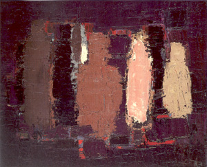

{kind=link}
Atelier (195 x 114 cm) - 1955 - Huile sur toile - Galerie Jeanne Bucher

Bateau de guerre (65 x 81 cm) - 1955 - Huile sur toile - Collection particulière, Lausane
{kind=link}
Nature morte au chandelier sur fond bleu (89 x 130 cm) - 1955 - Huile sur toile - Musée Picasse, Antibes

Nature morte aux bocaux (65 x 81 cm) - 1955 - Huile sur toile - Collection particulière
{kind=link}
Bouteilles (65 x 81 cm) - 1952 - Huile sur toile - Collection particulière, Courtesy Massimo SA, Lugano
{kind=link}
Composition (105 x 76 cm) - 1947 - Encre de chine - Collection particulière
{kind=link}
Jour de fête (100 x 73 cm) - 1949 - Huile sur toile - Galerie Jeanne Bucher

Les Footballeurs (65 x 81 cm) - 1952 - Huile sur toile - Courtesy Galerie Daniel Malingue

Paris la nuit (45 x 60 cm) - 1954 - Collection particulière, Suisse
{kind=link}
Étude de nu (150 x 100 cm) - 1955 - Fusain sur papier - Fondation Marguerite et Aimé Mæght, Saint-Paul

Grand nu orange (89 x 146 cm) - 1953 - Huile sur toile - Collection particulière
{kind=link}
Bouteilles rouges (73 x 100 cm) - 1955 - Huile sur toile - Collection particulière, Suisse
{kind=link}
Ressentiment (100 x 81 cm) - 1947 - Huile sur toile - Galerie Jeanne Bucher
{kind=link}
La Route (60 x 81 cm) - 1954 - Huile sur toile - Collection particulière
{kind=link}
La Route d'Uzès (60 x 81 cm) - 1954 - Huile sur toile - Collection particulière
{kind=link}
Paysage (33 x 46 cm) - 1952 - Huile sur carton - Collection particulière
{kind=link}
Chemin de fer au bord de la mer, soleil couchant (73 x 100 cm) - 1955 - Huile sur toile - Courtesy Galerie Daniel Malingue